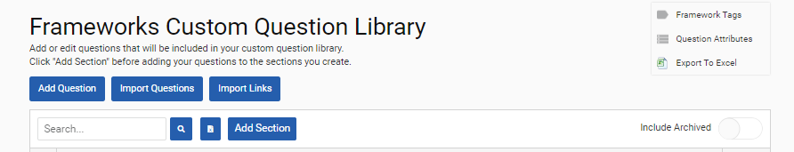

GSE-724: You can now link Frameworks questions in bulk using a Microsoft Excel upload.
If you want the responses to one or more questions pulled into the data of a single, similar question, you can now use an Excel import to set that up.
In Admin Settings > Frameworks > Custom Question Library, click the ‘Import Links’ button at the top of the screen.

This will open the ‘Import Question Linking’ screen. Click the ‘Choose File’ button to import a Cority-created Excel template (like those used in other Frameworks imports). You will have already set up the question linking you want using the template. Click the ‘Continue’ button to see a preview of the file with your question linking. Click the ‘Continue’ button to upload the file and its linking.
For setting up the question linking, use the KPI references for the questions. For example, within the import template file you could link question ABC to questions 123 and 456. Then if you want to unlink 123 and 456 from ABC, you would simply remove 123 and 456 from the ‘Linked to KPI reference(s)’ column.